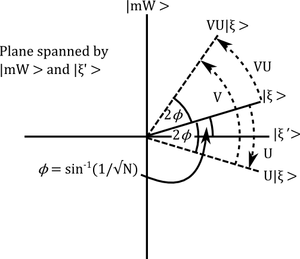
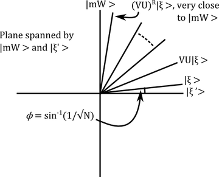

Quantum computers: Grover's algorithm
Quantum computers: Grover's algorithm
I've been meaning to get my head around the idea of a quantum computer for a while now and, since my mathematical energy is currently reduced to clearing out my ETH office, I thought I'd do some reading and find out more. I leafed through my dusty copy of Wikipedia #Wik, picked up Kitaev et al #KSV from the library and turned to chapter two…
I think the easiest way to illustrate how a quantum computer differs (functionally) from a classical computer is by explaining an algorithm which only makes sense for quantum computers and which really outperforms a classical algorithm for the same task (that is the point of quantum computers, after all). The first algorithm they explain in #KSV is called Grover's algorithm and it performs the task of searching a database. Wikipedia #Wik has a really nice exposition too, but I was initially confused by what they both call a "quantum oracle" (sounds like something from Star Trek TNG). I tried to explicitly avoid that in what I said below.
TLDR: Classically you have to look through all \(N\) elements of a database until you find the right one (so runtime increases linearly in \(N\)); Grover's algorithm has a surprising runtime of order \(\sqrt{N}\) to do the same thing, using clever ideas from quantum mechanics.
The problem
You have a collection of \(N\) objects you want to store on a database. The objects can be either black or white. Each object has an identification number between 1 and \(N\) and a colour. For simplicity assume that there's only one white object in the database and you want to find out its identification number m. A classical computer would work through the objects in the database one by one and check each one to see if it were white. Assume that the probability that the kth object is white is \(1/N\), then the expected runtime for this classical algorithm would be \[\sum_{k=1}^Nk/N=(N+1)/2\] which is asymptotically linear in \(N\) (i.e. if you have lots and lots of objects then quadrupling the number of objects quadruples the runtime).
Grover #Gro showed that a quantum computer could do better, with a runtime which goes asymptotically like \(\sqrt{N}\) (quadrupling the number of objects only doubles the runtime).
So what is a quantum computer?
Of course I don't know how to build a physical quantum computer. If I did I'd probably have your bank account details by now. But let me explain how to mathematically model quantum computers: how they manipulate and store data. Classically, you store data as strings of 0s and 1s. On a quantum computer you store data as vectors. A "bit" of a string (i.e. a place where a 0 or 1 could go) is now replaced by a "qubit" – a two dimensional complex vector space with a basis \(|0\rangle,|1\rangle\). Obviously you could represent 0s and 1s by pointing in those directions, but you can now point in a whole host of other directions, linear combinations of the vectors \(|0\rangle\) and \(|1\rangle\). Note that the funny notation \(|v\rangle\) is standard in quantum mechanics, was introduced by Dirac and makes it easy to talk about vectors in the dual space \(\langle w|\) and the number you get by evaluating \(\langle w|\) on \(|v\rangle\) is \(\langle w|v\rangle\).
A string of bits is replaced by the tensor product of qubits (i.e. of vector spaces). In Dirac's notation we have a nifty trick for writing tensor products: \[|v_1v_2\rangle\equiv|v_1\rangle\otimes |v_2\rangle\] Let's write \(T\) for the tensor product of all our qubits (this is now a \(2n\)-dimensional complex vector space) and call it our state space. So a string \(0011101\) can be transformed into a vector \(|0011101\rangle\), but vectors can be added in all sorts of ways and we end up with points in our state space which don't correspond to classical data strings.
Ideally, \(T\) would be realised as the Hilbert space of some explicit quantum mechanical system, but remember we're only interested in how to model it mathematically (which is much easier).
Quantum algorithms and measurements
Instead of getting a Turing machine to work along a classical data string manipulating the 0s and 1s according to some program, at each timestep our quantum computer will apply a unitary transformation to the state space \(T\).
After some sequence of unitary transformations have been applied (which we think of as a "quantum algorithm"), we measure the system. Now measurement is a tricky thing in quantum mechanics and I want to avoid that discussion right now. But at least we have to specify what we are measuring. Well suppose we just had one qubit and we applied a load of unitary transformations to it (just unitary 2-by-2 matrices). If we started off with some vector, say \(|0\rangle\), and ended up with another one, say \(|\xi\rangle\), we really want to get back to basics and know if we've got a 0 or a 1. But that doesn't make sense any more! It's quite possibly a superposition of the two. "Measuring" the 0- or 1-ness of the qubit in a state \(|\xi\rangle\) means:
- we consider the operator which projects the qubit onto the subspace spanned by \(|1\rangle\),
- this has eigenvalues 0 and 1 with eigenspaces spanned by \(|0\rangle\) and \(|1\rangle\) respectively,
- when we measure the system we cause it to collapse into one or the other eigenspace and the number we measure is 0 (with probability \(|\langle\xi|0\rangle|^2\)) or 1 (with probability \(|\langle\xi|1\rangle|^2\)),
- in order to ensure that all probabilities sum up to 1 (which they surely should!) we need to normalise our states to have norm 1, i.e. \(|\langle \xi|\xi\rangle|^2=1\).
As I said, I don't want to justify this – we can treat it as axiomatic or we can go and read Bohm. Either way, we end up getting a probabilistic algorithm (i.e. we have to run the algorithm many times and only afterwards can we guess what \(|\xi\rangle\) was by looking at the probabilities).
Grover's algorithm
State space for the database
First we encode our database into a vector space. Remember our data consists of strings of length \(n\) (identification numbers for the \(N=2n\) objects) and colours (black or white) for each object (yes I know they're not colours, it's a figure of speech).
Introduce basis vectors \(|x_1x_2\cdots x_n\rangle\) for each identification number and \(|B\rangle\), \(|W\rangle\) for the colours. Form the tensor product \(T\) (state space) so that a general basis element is something like \[|100101001010\cdots 10010011B\rangle\]
Unitary transformations for the algorithm
Let \(U\) be the unitary operator \[U|xB\rangle\equiv|xB\rangle,\qquad U|xW\rangle\equiv-|xW\rangle\] (writing \(x\) for an arbitrary identification number) and let \[|\xi\rangle\equiv\frac{1}{\sqrt{N}}\sum_x|xC(x)\rangle\] where \(C(x)\) denotes the colour of object \(x\) and the coefficient is for normalisation (we want all states to have norm one). Finally we define \[V\equiv 2|\xi\rangle\langle\xi|-1.\] The funny notation needs another word of explanation: \(|\xi\rangle\langle\xi|\) means the operator sending a vector \(|w\rangle\) to \(|\xi\rangle\langle\xi|w\rangle\) (which is just a rescaling of \(|\xi\rangle\) by the number \(\langle\xi|w\rangle\)).
These (\(U\) and \(V\)) are the unitary transformations we'll use in Grover's algorithm.
Notice that they're both reflections: \(U\) reflects in the hyperplane orthogonal to all white vectors and \(V\) acts as \(-1\) on the hyperplane \(|\xi\rangle^{\perp}\) orthogonal to \(|\xi\rangle\) and preserves the vector \(|\xi\rangle\).
The algorithm
We apply the composite transformation \(VU\) to \(T\) and specifically look at what happens to the vector \(|\xi\rangle\) which we defined above as \(\frac{1}{\sqrt{N}}\sum_x|xC(x)\rangle\).
Diagram showing how the composite map \(VU\) is a rotation. What is the operation \(VU\)? It's a composition of two reflections and hence it's a rotation. To understand exactly what's rotating where, let's write \(|\xi'\rangle\) for the projection of \(|\xi\rangle\) to the subspace spanned by black vectors (normalising \(|\xi'\rangle\) to have norm 1) and restrict attention to the 2-dimensional subspace spanned by \(|\xi'\rangle\) and the vector \(|mW\rangle\), corresponding to the unique white vector in our dataset (remember I told you a long time ago that \(m\) is the identification number of the unique white object!).
Now \(|\xi\rangle\) is a linear combination of \(|\xi'\rangle\) and \(|mW\rangle\) by construction, say \[|\xi\rangle=\cos\phi|\xi'\rangle+\sin\phi|mW\rangle\] Moreover, we know that the coefficient of \(|mW\rangle\) in \(|\xi\rangle\) is \(1/\sqrt{N}\), so \[\sin(\phi)=1/\sqrt{N}.\] The two reflections \(U\) and \(V\) preserve the 2-dimensional subspace spanned by \(|\xi'\rangle\) and the vector \(|mW\rangle\). Indeed, reflecting using \(U\) gives \[U|\xi\rangle=\cos\phi|\xi'\rangle-\sin\phi|mW\rangle\] and the using \(V\) (exercise, very clear when you draw the picture!) gives

\[VU|\xi\rangle=\cos(\phi+2\phi)|\xi'\rangle+\sin(\phi+2\phi)|mW\rangle\] In other words, \(VU\) is a rotation by \(2\phi\) towards \(|mW\rangle\). If we rotate \(R\) times then the \(|mW\rangle\)-component of \((VU)^R|\xi\rangle\) is \[\sin((2R+1)\phi)\] and (remembering our discussion about measurement) the square of this quantity \[\sin^2((2R+1)\phi)\] has an interpretation as the probability that we get the right identification number for the white object when we measure the identification number in this state (i.e. after rotation). When \(N\) is large φ is very small and we can pick \(R\) to make \(\sin^2((2R+1)\phi)\) very close to 1. Indeed, when \(N\) is enormous, so that \(\phi\approx\sin\phi=1/\sqrt{N}\) it's clear that we need \(2R/\sqrt{N}\approx \pi\), i.e. \[R\approx \pi\sqrt{N}/2\mbox{ iterations}.\]
Note: we don't want to do any more than this, or else we start rotating away from \(|mW\rangle\) !

Conclusion
We only had to do Grover's algorithm about \(\pi\sqrt{N}/2\) times to the right answer with high probability, which is a big saving – if we quadruple the number of objects in the database then classically we quadruple computing time, but with Grover's algorithm we only double it!
Of course, we need to repeat the experiment many times to get a probability distribution and pick the identification number which seems to occur with a frequency \[\sin^2((2R+1)\phi)\] but we can do this a fixed number of times (independently of \(N\)) because the probability that we get the right answer is improving with \(N\). All in all, we quadratically save computational effort and it's all thanks to the tricksy use of (purely formal) quantum mechanics.
Of course, it's not clear to me how you would really implement this algorithm (How would you start the quantum computer in the state \(|\xi\rangle\)? How would you actually do the unitary transformations?) so we should really treat it as a mathematical abstraction until further notice. However, it's a simple and surprising illustration of the power of quantum mechanics.
This post was brought to you by the numbers 0 and 1 and the letter Q.
References
[#Gro] L. Grover, "A fast quantum mechanical algorithm for database search", Proceedings, 28th Annual ACM Symposium on the Theory of Computing (STOC), May 1996, pages 212-219, arXiv: quant-ph/9605043
[#KSV] A. Y. Kitaev, A. H. Shen, M. N. Vyalyi, "Classical and Quantum Computation", Grad. Stud. in Math. Vol. 47 (2002) AMS, Providence
[#Wik] Wikipedia (13.08.2012) http://en.wikipedia.org/wiki/Grover's_algorithm